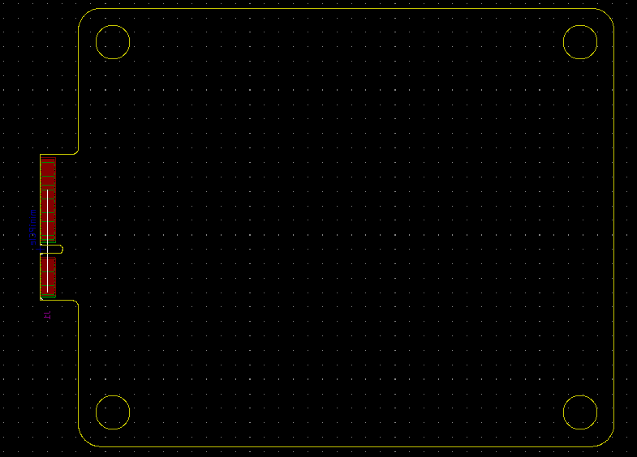

This project template is the basis of an expansion board for the DevTerm. It includes a PCB edge matching the outline of the DevTerm ext PCB with connectors and mounting holes placed correctly to align the two boards.
Note:This template is build base on the public DXF file that released by the clockworkPi and import into the kicad 6. A mini-PCIE footprint is included in the template.
